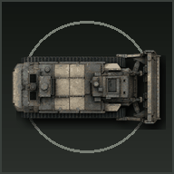

Road Trip Rampage 3D
Play Game
Waitlist
GitHub
Opening
Final product overview
00:00 / 05:00
Submitted Links
Final Vercel game
GitHub repository
Preview branch proof
Vercel deployments dashboard
Original GitHub Pages version
Waitlist Link
Voiceover Script